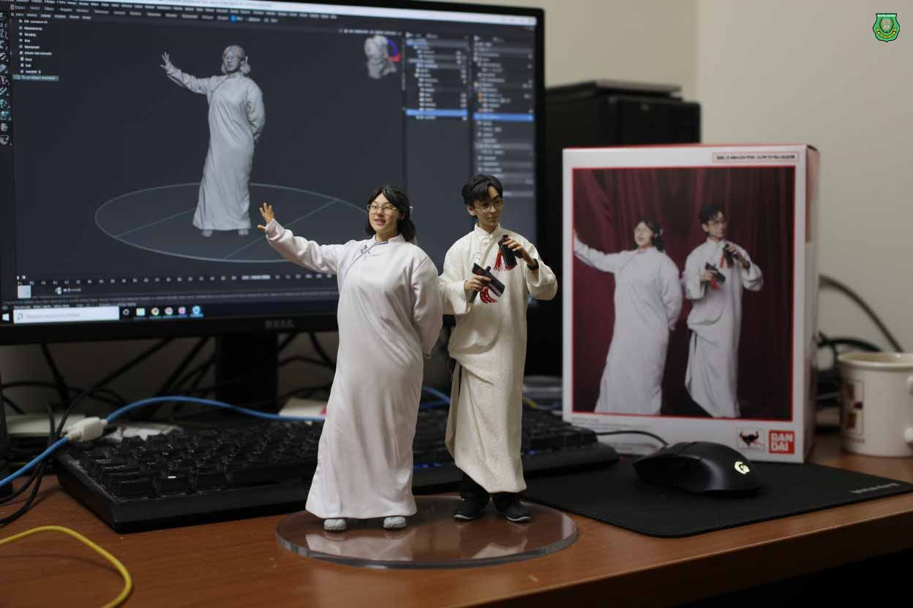
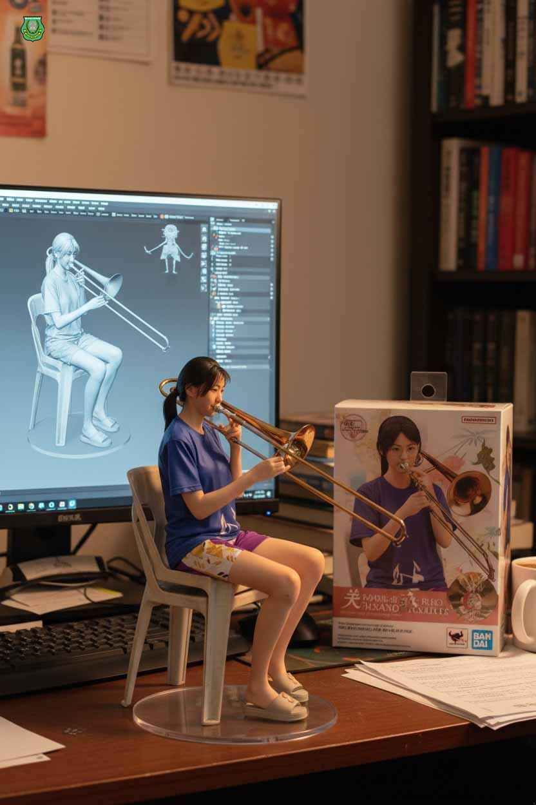
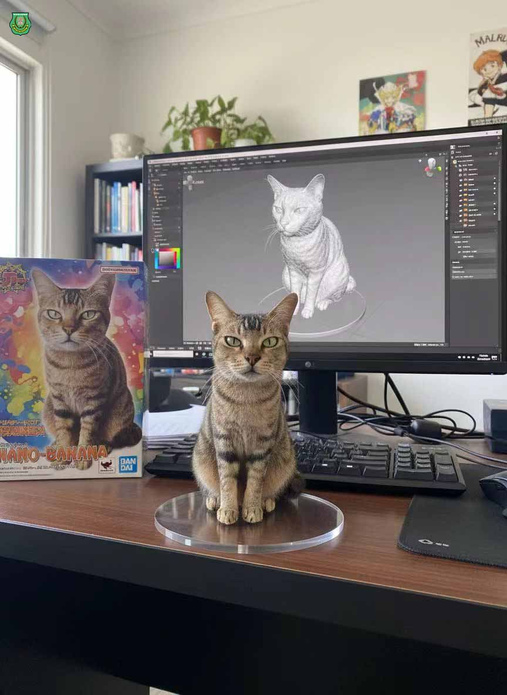
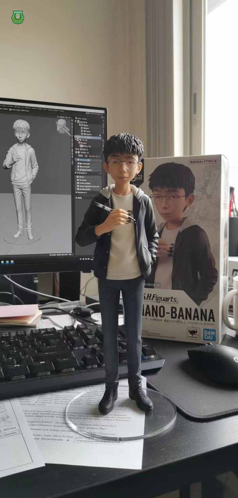
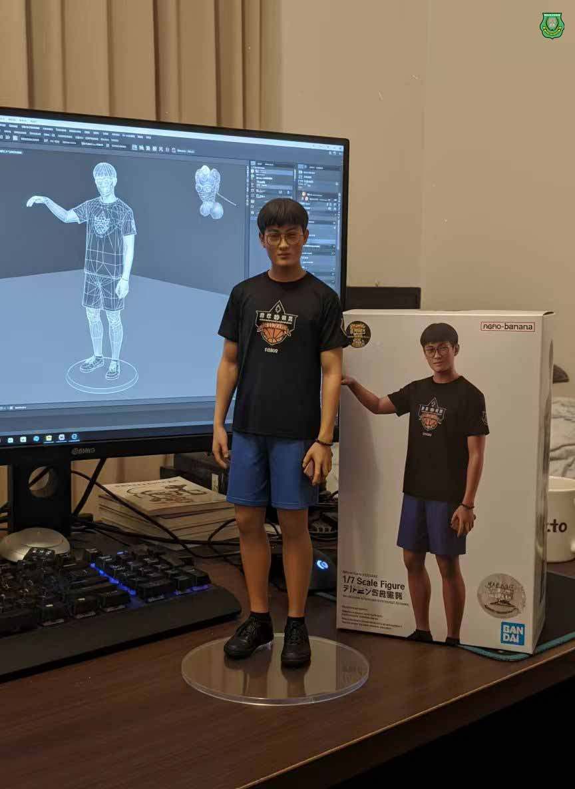
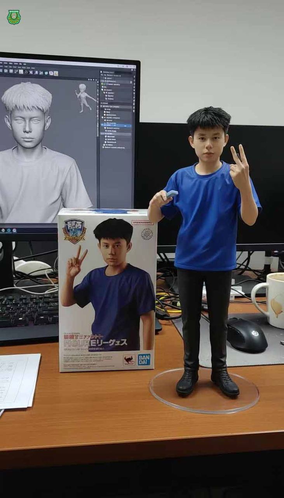
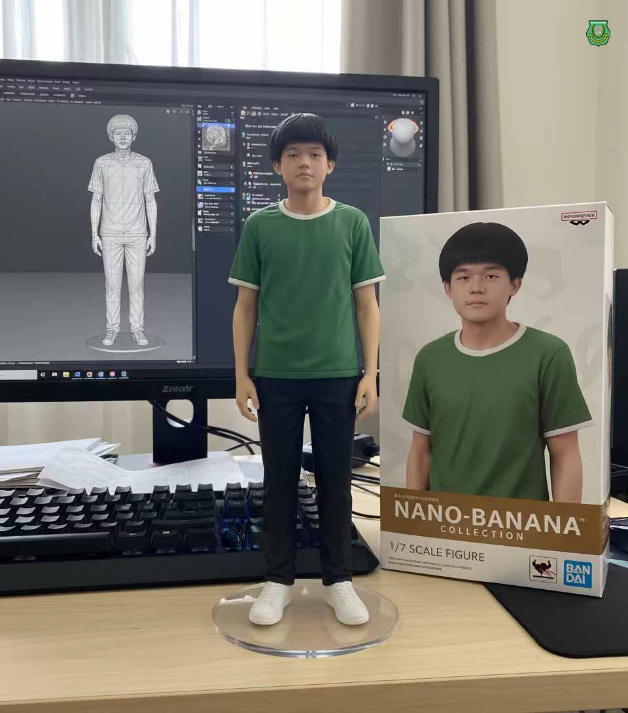
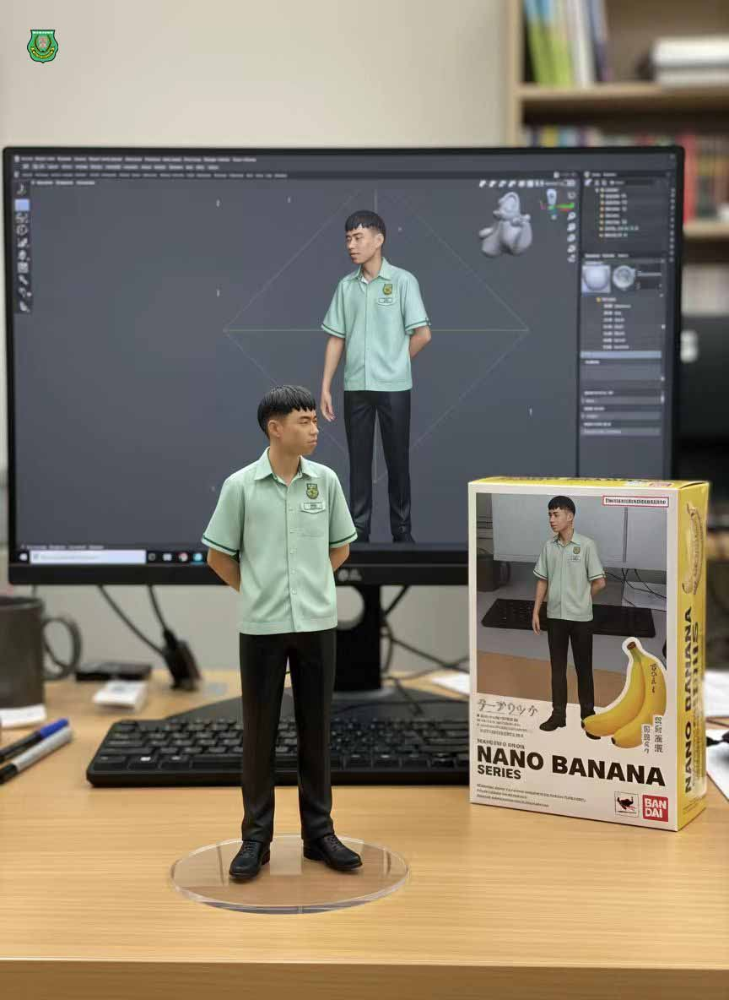

南华独中AI应用课：
南华独中AI应用课：
学生抢先体验Google新模型 nano-banana
Google 近日刚发布全新的 nano-banana 模型，以图像创作和角色一致性为亮点。南华独中高中“AI应用课”随即带进课堂，让学生们边学边玩，直接感受“全球最热潮流”。
指导老师 林子策表示：“AI 应用课最大的特色就是灵活。只要有新工具出来，就能第一时间体验。学生不只是在学操作，更是在和世界最新的科技同步。” 林老师补充道：“教育不是要追科技跑，而是让学生在最新的工具里，找到属于自己的创造力和表达方式。”在这一堂课里，AI 不只是一个工具，更像是一扇窗，让学生们看见了未来的无限可能。







